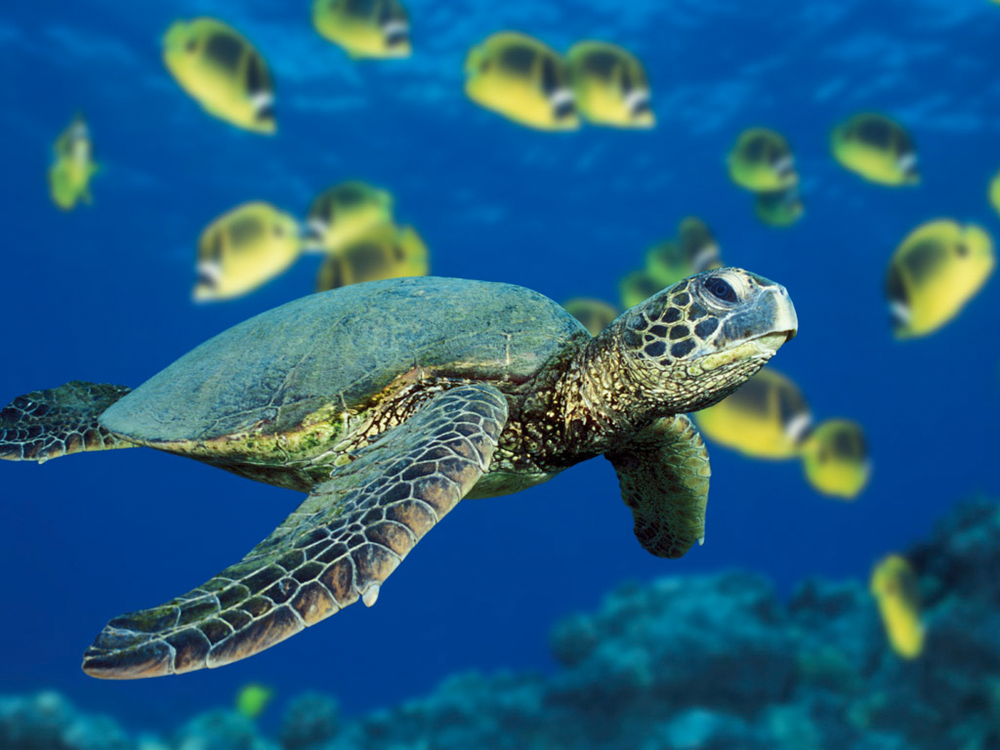
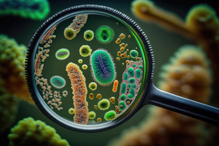

Biologia Marina
La biología marina es la ciencia rama de la biología que estudia la vida marina, lo cual incluye el estudio de la flora, la fauna, la funga y el microbioma propios del mar, así como de las comunidades marinas que estos conforman...

Biologia Botanica
La botánica (del griego βοτάνη, 'hierba') o fitología (del griego φυτόν, 'planta' y λόγος, 'tratado') es la rama de la biología que estudia las plantas, bajo todos sus aspectos, lo cual incluye: descripción, clasificación, distribución, identificación, el estudio de su reproducción, fisiología, morfología, relaciones ...

Biologia Ecologica
La ecología es la rama de la biología que estudia las relaciones de los diferentes seres vivos entre sí y su relación con el entorno: «la biología de los ecosistemas». Estudia cómo estas interacciones entre los organismos y su ambiente afectan a propiedades como la distribución o la abundancia...

Microbiologia
La microbiología es la ciencia encargada del estudio y el análisis de los microorganismos, seres vivos diminutos no visibles al ojo humano (del griego «μικρος» mikros "pequeño", «βιος» bios, "vida" y «-λογία» -logía, tratado, estudio, ciencia), también conocidos como microbios. Se dedica a estudiar los organismos que son solo visibles a través del microscopio: organismos procariotas y eucariotas simples...
